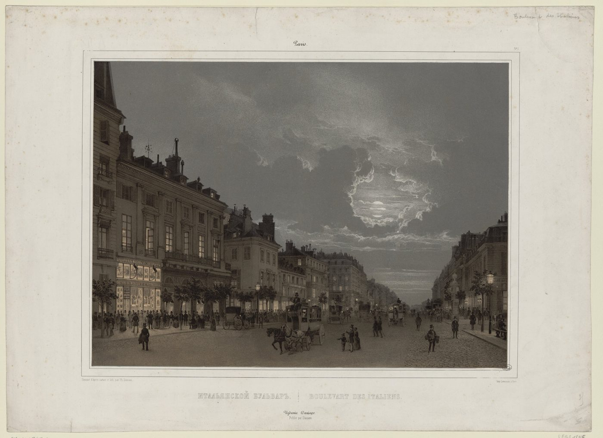
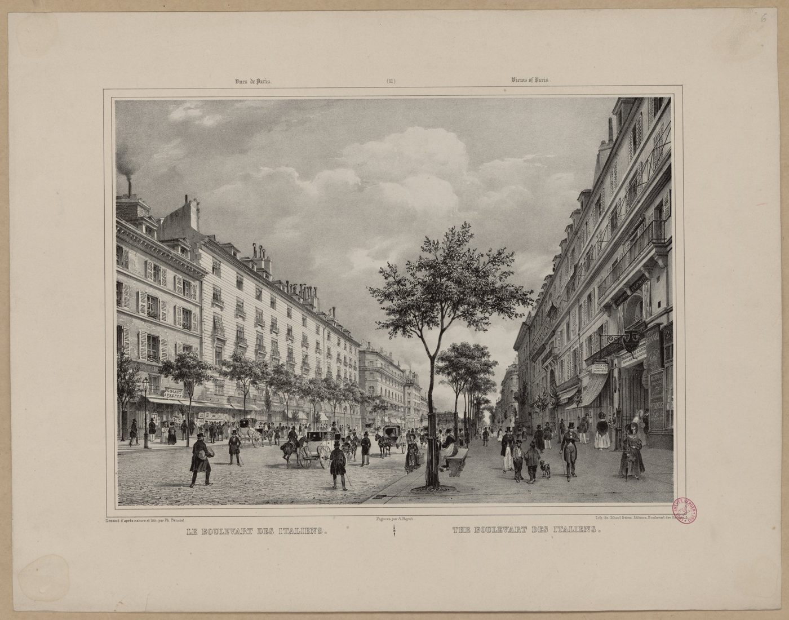
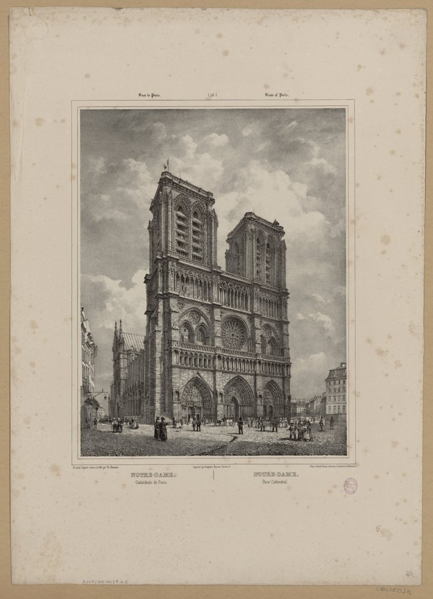
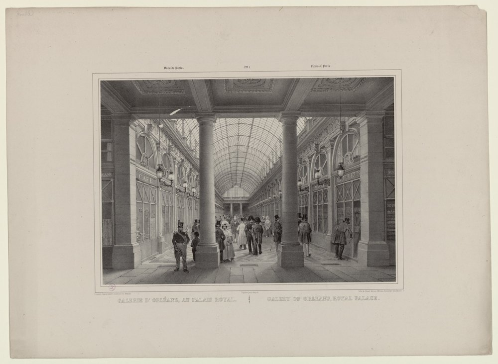
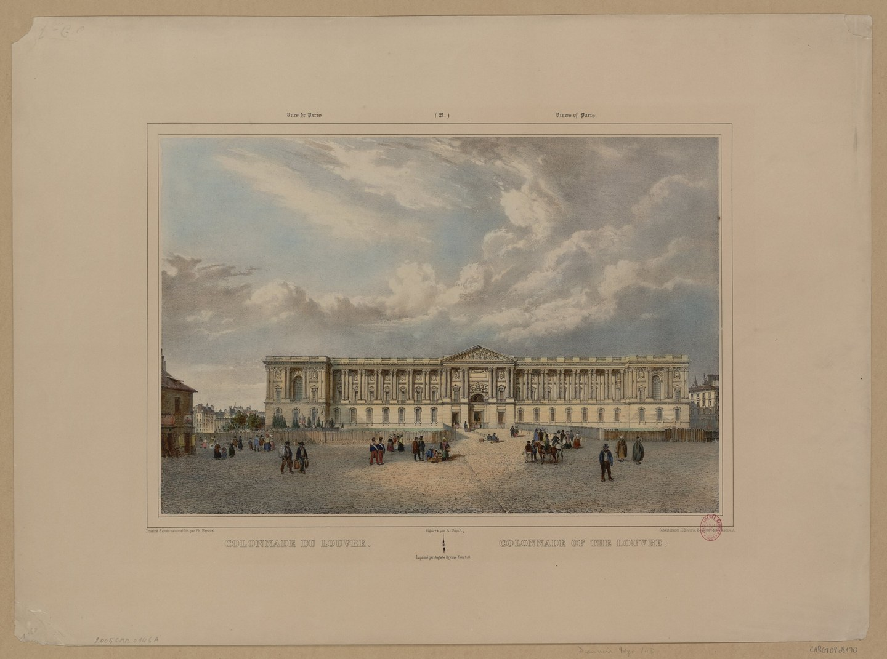
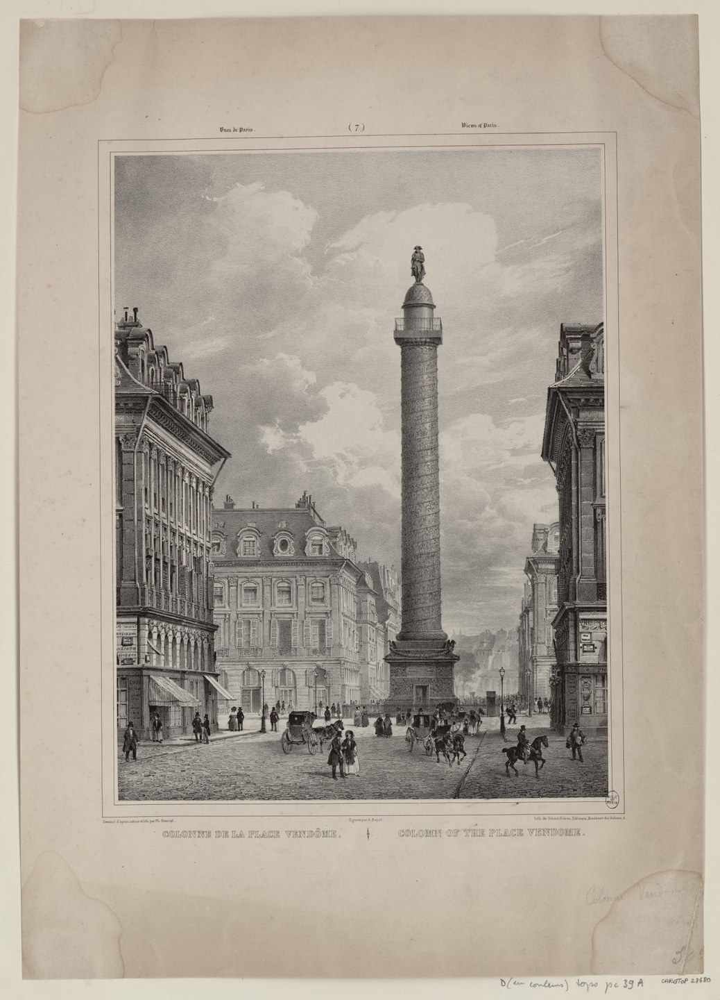
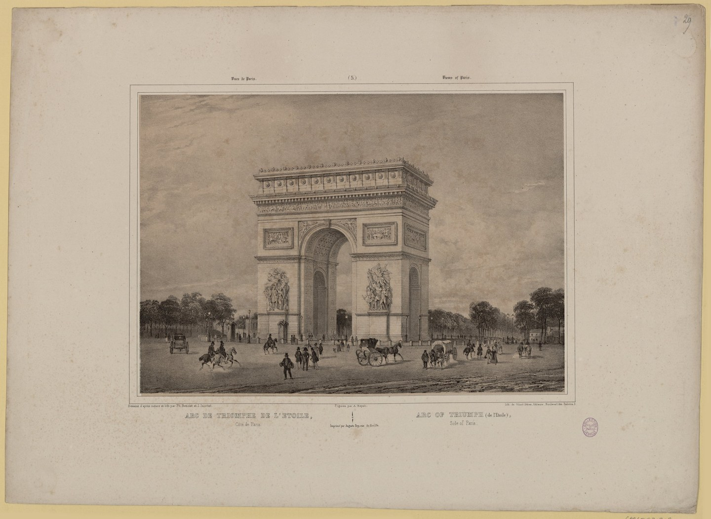
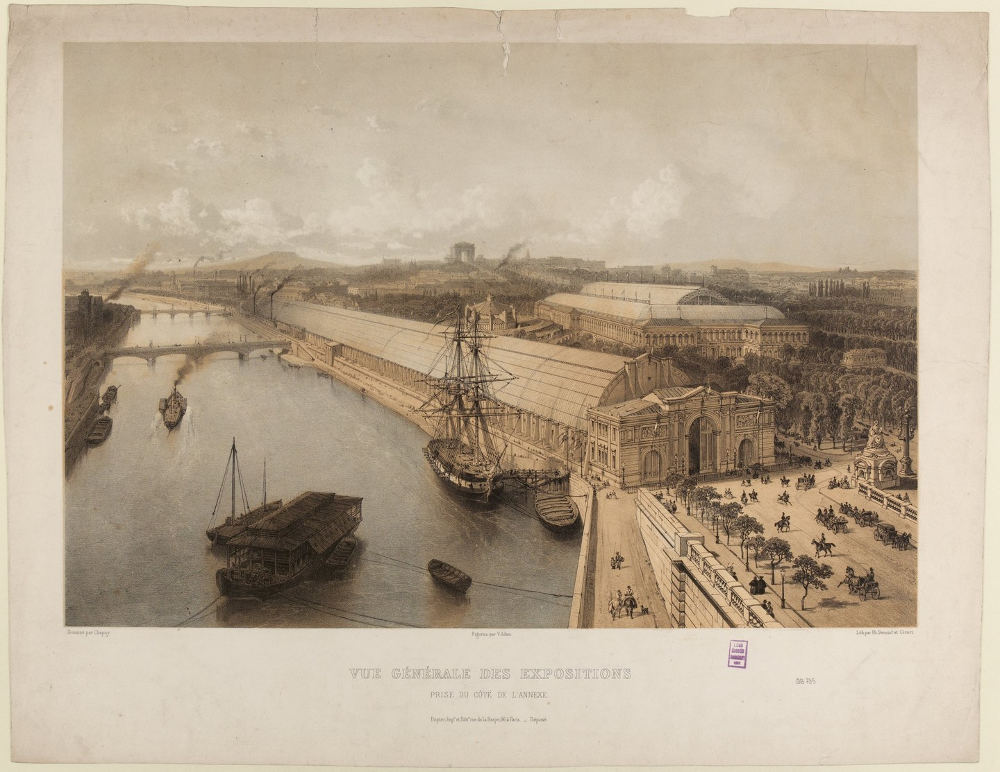

Бенуа рисовали Париж для печатных альбомов. У каждого листа указано, кто рисовал, кто печатал и кто издавал. Все роли взяты из музейных записей; где музей чего-то не называет, мы этого не добавляем.

Церковь Мадлен
Филипп Бенуа · около 1845–1860 · Библиотека Конгресса США: ограничений на публикацию не известно
Рисовал (del.): Ph. Benoist · Печатал: Lemercier, Париж
Художник стоял сбоку, поэтому совпадает только передний портик. Попробуйте найти его на фото.

Парижский Пантеон (не римский)
Филипп Бенуа; А. Байо · дата в музее не указана · CC0
Рисовал и переводил на камень: Филипп Бенуа, А. Байо · Печатал: Братья Жио · Издавал: Братья Жио
Римский Пантеон Вази показывает с площади, парижский Бенуа и Байо — как торжественное здание на холме. Сравните, что каждый художник выбрал показать.

Бульвар Итальянцев ночью
Филипп Бенуа · около 1855 · CC0
Рисовал и переводил на камень: Philippe Benoist · Печатал: Imprimerie Lemercier · Издавал: Daziaro
Тот же бульвар, что на соседнем листе, но ночью и с другого места: освещённые окна и луна.

Бульвар Итальянцев днём
Филипп Бенуа; Адольф Байо · дата в музее не указана · CC0
Автор по музейной карточке: Philippe Benoist · Рисовал и переводил на камень: Adolphe Jean Baptiste Bayot · Печатал: Gihaut Frères
Дневной вид бульвара другой типографии. Это не второй оттиск того же вида, а отдельная композиция: сравните деревья и дома.

Нотр-Дам
Филипп Бенуа · дата в музее не указана · CC0
Рисовал и переводил на камень: Филипп Бенуа · Печатал: Огюст Бри · Издавал: Братья Жио

Галерея Орлеана
Филипп Бенуа · дата в музее не указана · CC0
Рисовал и переводил на камень: Филипп Бенуа · Печатал: Братья Жио

Лувр и новая улица Риволи
Филипп Бенуа · дата в музее не указана · CC0
Рисовал и переводил на камень: Филипп Бенуа

Колоннада Лувра
Филипп Бенуа; А. Байо · дата в музее не указана · CC0
Рисовал и переводил на камень: Филипп Бенуа, А. Байо · Печатал: Огюст Бри · Издавал: Братья Жио

Вандомская колонна
Филипп Бенуа; А. Байо · дата в музее не указана · CC0
Рисовал и переводил на камень: Филипп Бенуа, А. Байо · Автор оригинала: Филипп Бенуа · Печатал: Братья Жио · Издавал: Братья Жио

Триумфальная арка
Филипп Бенуа; Луи-Жюльен Жакотте; А. Байо · дата в музее не указана · CC0
Рисовал и переводил на камень: Филипп Бенуа, Луи-Жюльен Жакотте, А. Байо · Издавал: Братья Жио

Павильоны выставки
Феликс Бенуа; Эжен Сисери · дата в музее не указана · CC0
Рисовал и переводил на камень: Феликс Бенуа, Эжен Сисери · Автор оригинала: Виктор Адам, Шапюи · Печатал: Жан Венсан Мари Доптер · Издавал: Жан Венсан Мари Доптер